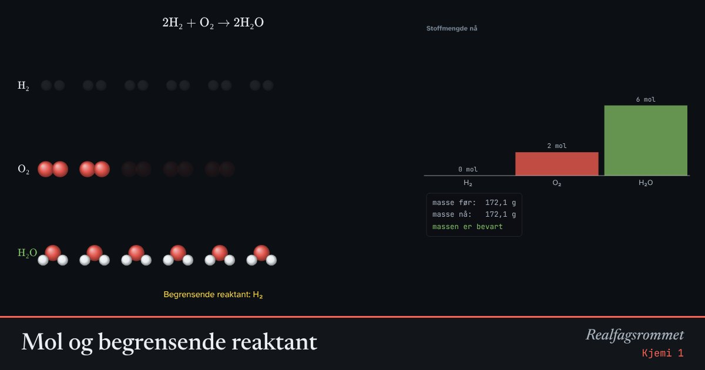

Mol og begrensende reaktant
Koeffisientene i reaksjonslikningen forteller i hvilket forhold stoffene reagerer. Når den ene reaktanten er brukt opp, stopper reaksjonen. Den kalles den begrensende reaktanten.
Start animasjonen
Formler
Om animasjonen
Hvert molekyl i figuren står for ett mol. Reaksjonen skjer i porsjoner med akkurat de mengdene koeffisientene sier.
Den reaktanten som tar slutt først, er den begrensende reaktanten. Den bestemmer hvor mye produkt du får. Resten av den andre reaktanten er i overskudd.
Molar masse gjør om mellom mol og gram. Massen er bevart: summen av massene før er lik summen etter.
Prøv dette
- Hvor mange mol O₂ trengs for å reagere med 6 mol H₂?
- Lag en blanding der ingen reaktant er i overskudd i metanforbrenningen.
- Regn ut hvor mange gram vann som dannes fra 4 mol H₂ og 5 mol O₂.
- Vis at massen er bevart i ammoniakksyntesen med tallene i animasjonen.
Kompetansemål
- Kjemi 1: Reaksjoner og støkiometri
- Kjemi 2: Synteser, utbytte og atomøkonomi